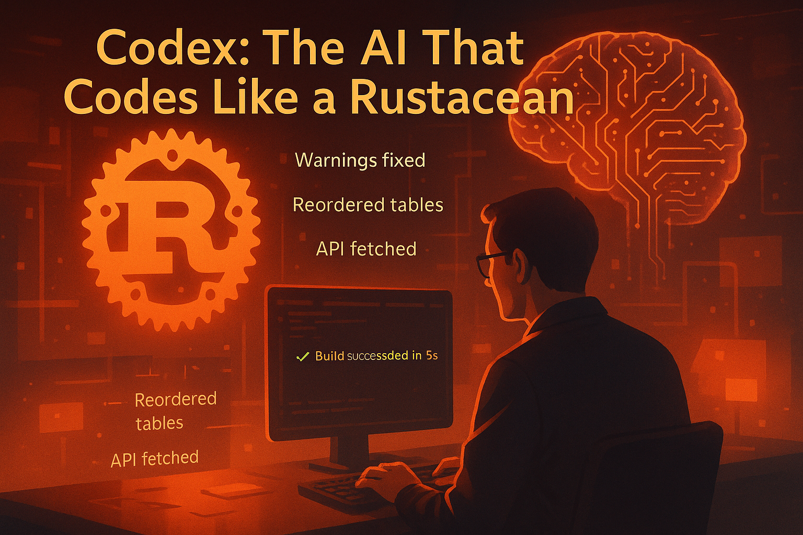

BrowserOS vs Atlas: Agentic Browsers, Finally Friendly to Linux
For years, the idea of an agentic browser felt just slightly out of reach for Linux users. The demos were exciting: an AI that can open websites, click buttons, wait for pages, fill forms, and complete real tasks using plain English. But in practice, most of those tools were either cloud‑locked, Windows‑only, or tightly controlled.
That's why discovering BrowserOS in the AUR feels like a small but important shift. It brings the agentic‑browser idea to Linux in a way that actually fits how Linux users work.

What Is an Agentic Browser?
An agentic browser is not just a chatbot with tabs. It is a browser that:
- Understands goals written in plain English
- Navigates real websites like a human
- Clicks, scrolls, waits, types, and reacts to dynamic content
- Uses your logged‑in sessions and local context
- Executes multi‑step tasks autonomously
Think of it as a bridge between automation tools and human browsing — without writing scripts.
BrowserOS at a Glance
BrowserOS is an open‑source, AI‑native browser designed specifically for agent workflows.
- Open source
- Runs locally on Linux
- Available via AUR
- Uses your existing browser sessions
- Supports multiple AI models
- Privacy‑first by design
A common demo task looks like this:
"Go to the YC launch page, find the project, and upvote it."
The agent then navigates, waits for page load, finds the correct UI element, and performs the action — visually and transparently.
Atlas at a Glance
Atlas popularized the modern agentic‑browser experience. It proved that:
- LLMs can reason over DOM structures
- Agents can handle real‑world web friction
- Browser automation doesn't need scripts
- No native Linux support
- Closed ecosystem
- Limited control over models
- Cloud‑centric architecture
For Linux, Atlas is more inspiration than tool.
Feature Comparison
| Feature | BrowserOS | Atlas |
|---|---|---|
| Linux support | ✅ Native (AUR) | ❌ Not available |
| Open source | ✅ Yes | ❌ No |
| Local execution | ✅ Yes | ⚠️ Mostly cloud |
| Uses logged‑in sessions | ✅ Yes | ✅ Yes |
| Multi‑model support | ✅ Yes | ❌ Limited |
| Privacy control | ✅ High | ⚠️ Medium |
| Hackable / extensible | ✅ Very | ❌ Minimal |
Why BrowserOS Makes Sense for Linux Users
Linux users tend to value:
- Control over their environment
- Tool composability
- Transparency over magic
- The ability to swap components
BrowserOS aligns naturally with that mindset. You can:
- Route different tasks to different models
- Treat the browser as a local agent runtime
- Combine it with CLI agents and scripts
- Inspect behavior instead of trusting black boxes
It feels less like a product demo and more like infrastructure.
Real‑World Usage
In practice, BrowserOS shines at:
- YC / Hacker News interactions
- Admin dashboards
- Internal tools
- Auth‑heavy websites
- Repetitive but UI‑bound workflows
It is especially useful where Playwright or Selenium would be overkill — and where traditional automation breaks due to UI changes.
Limitations (So Far)
BrowserOS is still early:
- UI polish can improve
- Some sites aggressively block automation
- Agents still need guidance for complex flows
- Debugging agent mistakes is an ongoing UX challenge
But these are agentic‑class problems, not Linux‑specific ones.
The Bigger Picture
BrowserOS represents something important: Agentic tools are finally escaping closed demos and landing on real developer machines — especially on Linux.
For now:
- Atlas remains a strong reference design
- BrowserOS is the usable Linux implementation
And for Linux users, usability beats promises.
Conclusion
If you are on Linux today and want an agentic browser:
- Atlas is something to watch
- BrowserOS is something to use
The moment an agent can live locally, respect your environment, and work with your tools — it stops being a demo and starts being part of your workflow.
And that's where BrowserOS already stands.